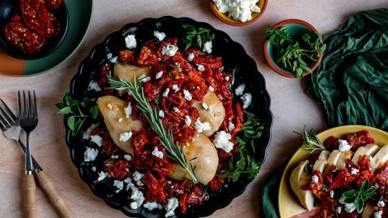

Chicken Bryan

Description
Grilled chicken with a basil lemon butter sauce topped with sundried tomatoes and creamy goat cheese. A Carrabba's favorite!
Oh how we love Carrabba's and their popular chicken dishes. I am all about robust flavors and they make some seriously flavorful dishes. When I found a copycat recipe for Carrabba's Chicken Bryan, I was sold and couldn't whip it up fast enough.
Ingredients
- 1 tablespoon minced garlic
- 1 tablespoon minced yellow onion
- 2 tablespoons butter
- 1/2 cup dry white wine
- 1/4 cup fresh lemon juice
- 2/3 cup cold butter, sliced
- 1-1/2 cups chopped sun-dried tomatoes
- 1/4 cup chopped fresh basil
- 1/2 teaspoon kosher salt
- 1/2 teaspoon white pepper
- 6 boneless skinless chicken breast halves
- extra virgen olive oil, for brushing
- 1/2 teaspoon salt
- 1/2 teaspoon black pepper
- 8 ounces goat cheese, room temperature
Steps
- Saute garlic and onion in 2 Tbls. butter in a large skillet over medium heat until tender.
- Stir wine and lemon juice into skillet, increase heat to medium high, and simmer to reduce by half.
- Reduce heat to low and stir in cold butter, one slice at a time.
- Stir in tomatoes, basil, kosher salt, and white pepper; remove from heat; set aside.
- Brush chicken breasts with olive oil and sprinkle with salt and black pepper.
- Grill chicken over hot coals 15-20 minutes, or until cooked through.
- A couple of minutes before chicken is done, place equal amounts of cheese on each breast Spoon prepared sun-dried tomato sauce over chicken.